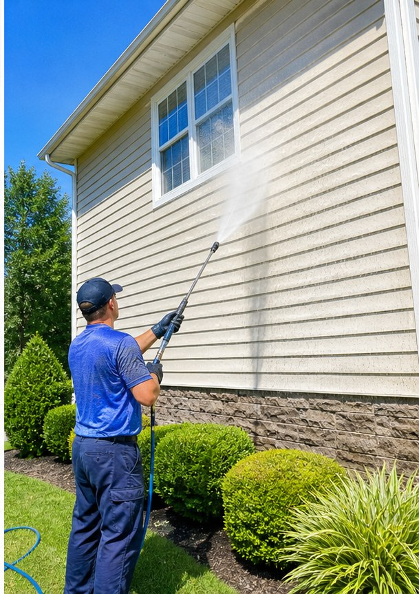

Inman pressure washing
Exterior cleaning with visible trust and a simple quote path.
House washing, Driveway cleaning, Soft washing, Gutter brightening, Deck cleaning, Exterior cleaning for Inman, SC customers.
- 5.026 Google reviews
- Pressure WashingInman, SC
- EasyTap-to-call scheduling

Services
Clear service options for real customers.
- House washing
- Driveway cleaning
- Soft washing
- Gutter brightening
- Deck cleaning
- Exterior cleaning

Built for curb appeal
Pressure washing customers respond to clear services, strong proof, and a fast quote path.
Frady's Pressure Washing can lead with its 5.0-star reputation while giving customers a clear path to review services and call for scheduling.

Before / after
Slide the clean line.
Before-and-after visuals make the result obvious before anyone fills out a form.
Clean proof
Frady's Pressure Washing gives Inman customers review proof before they call.
- 5.0-star Google rating
- 26 public reviews
- 115 Cochran Rd, Inman, SC
Contact
Frady's Pressure Washing
115 Cochran Rd, Inman, SC